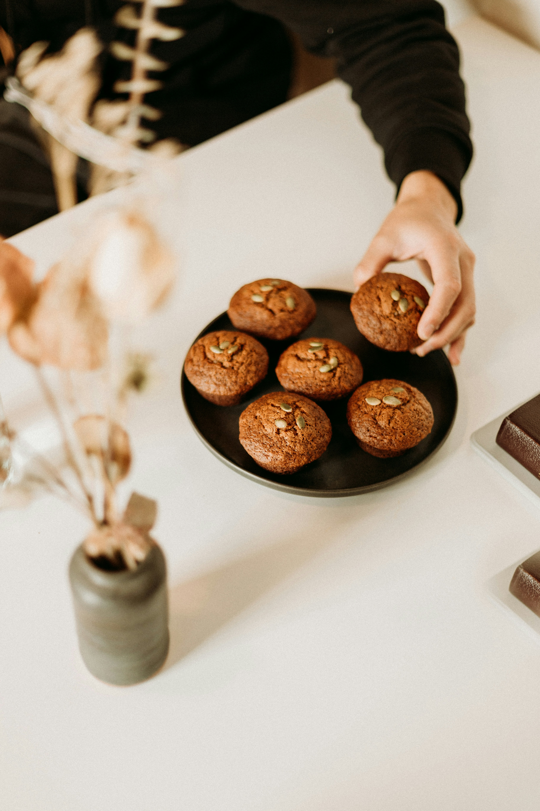

Bran Muffins a la Brian

Description
A bran muffin made with buttermilk and golden raisins. This is a recipe that is a combination of a variety of trials and errors. It is the only bran muffin recipe my husband likes.
Ingredients
- 1 ¼ cups wheat bran
- 1 cup buttermilk
- ½ cup vegetable oil
- ¾ cup brown sugar
- 1 egg
- 1 tablespoon molasses
- 1 cup all-purpose flour
- 1 teaspoon baking powder
- 1 teaspoon baking soda
- ½ teaspoon salt
- ½ cup golden raisins
Steps
Step one
- Preheat the oven to 400 degrees F (200 degrees C).
- Grease a 12 cup muffin tin, or line with paper muffin liners
- In a small bowl, mix together the wheat bran and buttermilk
- Set aside to soak until thickened, about 10 minutes.
Step Two
- In a large bowl, use an electric mixer to blend together the brown sugar, vegetable oil, egg and molasses
- Stir in the bran mixture
- Combine the flour, baking powder, baking soda and salt; stir into the batter until just moistened
- Mix in raisins
- Spoon batter into muffin cups, filling 3/4 full
Step Three
- Bake for 15 to 20 minutes in the preheated oven, until the tops spring back when lightly pressed.
- Bon Appetit